Next: Single pivoted motions Up: Frame order theory Previous: Frame order introduction Contents Index
For the residual dipolar coupling (RDC) and pseudo-contact shift (PCS) NMR phenomena, both effects are governed by the partial molecular alignment tensor A. For a two domain molecular system, when one domain is internally aligned with for example a paramagnetic lanthanide ion within a magnetic field, the other domain experiences a reduced alignment 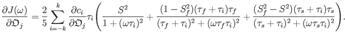 due to the interdomain motions.
The residual dipolar coupling is given by
where 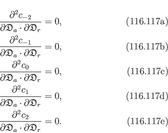 is the internuclear unit vector, d is the dipolar constant defined as
μ0 is the permeability of free space, γi is the gyromagnetic ratio of the nucleus i, 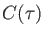 is Planck's constant divided by 2π, 〈r〉 is the time averaged internuclear distance, the factor of 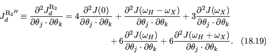 is to convert the constant from radians per second to Hertz, and the factor of three is associated with the alignment tensor. In the presence of an alignment tensor reduction, and assuming that the fast vibrational and librational internal motions of the vector are statistically self-decoupled from the rigid body motions, the RDC is simply
as the vector is considered time independent in the molecular reference frame.
The pseudo-contact shift equation is simply
where A is the alignment tensor, χ is the magnetic susceptibility tensor, is the lanthanide to nuclear unit vector, and c is the PCS constant defined as
The alignment tensor reduction process is complicated by the inverse 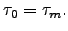r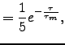 normalisation factor, as r is not time independent in the molecular reference frame.
The statistical mechanics behind the alignment tensor reduction can be expressed as
| 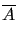 = 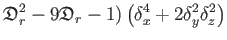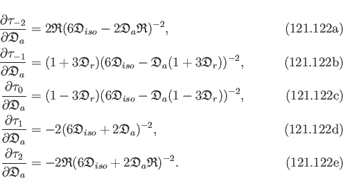R-1(Ωt)⋅A⋅R(Ωt) dt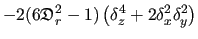,
|
(12.37) |
where the angular brackets denote the ensemble averaging, the time integration is for a single molecule over the evolution period of the physical interaction, Ωt are the SO(3) rotational angles describing the change in position of the moving rigid body, and A is the full alignment tensor. Here the alignment tensor has been created by an averaging of the partially restricted Brownian diffusion process of the non-moving component, again both over the ensemble and time, as
| A = 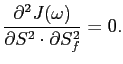R-1(Ωt)⋅F⋅R(Ωt) dt,
|
(12.38) |
where F is the molecular frame. It is assumed that the alignment process of the non-moving domain and the motions of the moving domain are decoupled.
Using the ergodic hypothesis, the averaging process which generates the reduced alignment tensor can be simplified as
| 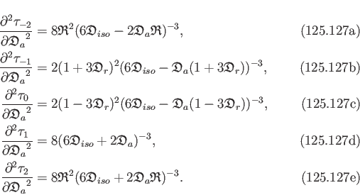 |
The index notation for a tensor rotation is
| Tij' = 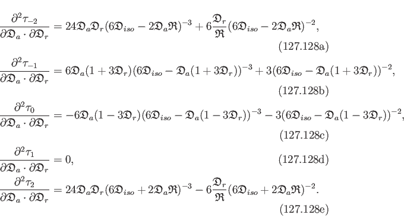RkiRljTkl. | (12.40) |
Therefore the reduced alignment tensor in index notation is
| 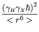 | = 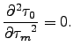Akl, | (12.41) |
| = Daeg(2)kiljAkl, | (12.42) |
where Daeg(2) is a rank-4, 3D orientational tensor which will be called the frame order tensor.
Expanding the sum,
| = DaegxixjAxx + DaegxiyjAxy + DaegxizjAxz | ||
| +DaegyixjAyx + DaegyiyjAyy + DaegyizjAyz | ||
| +DaegzixjAzx + DaegziyjAzy + DaegzizjAzz. | (12.43) |
As
 |
equation 12.43 becomes
| = 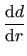Daegxixj - Daegzizj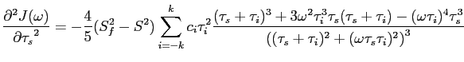Axx + 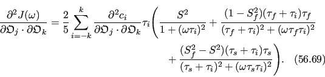Daegyiyj - Daegzizj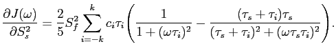Ayy | ||
| + 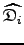Daegxiyj + Daegyixj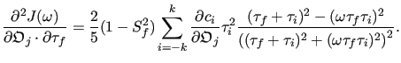Axy + 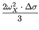Daegxizj + Daegzixj |
(12.45) |
A single element of the reduced tensor is simply a linear combination of all elements of the original tensor multiplied by constants consisting of different combinations of frame order matrix components.
Converting from the rank-2, 3D, symmetric and traceless space of alignment tensors to the rank-1, 5D space, a non-linear frame order superoperator can be written as
In matrix notation, this is
Let
| (12.48) |
and assuming the rank-2, 9D Kronecker product form of Daeg(2)ij using numerical indices where {i, j} = 0, 1,..., 8, then
| = 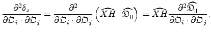⋅ |
(12.49) |
For the alignment tensor, the 81 elements of the frame order matrix have recombined into 25 unique scaling factors.
The alignment tensor is related to the orientational probability tensor by
| A = P - 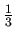I. | (12.50) |
The P probability tensor is the average orientation position of the molecule, hence is the average molecular frame
 .
As this frame is simply the rotation matrix relative to the laboratory frame, then
.
As this frame is simply the rotation matrix relative to the laboratory frame, then
 |
Therefore the alignment tensor can then be written as the anisotropic part of the first degree frame order matrix
| A = Daeg(1) - I. | (12.52) |
 ·
·